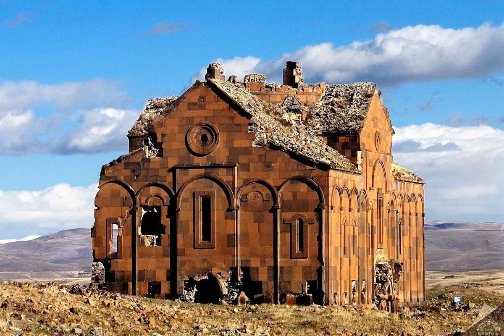
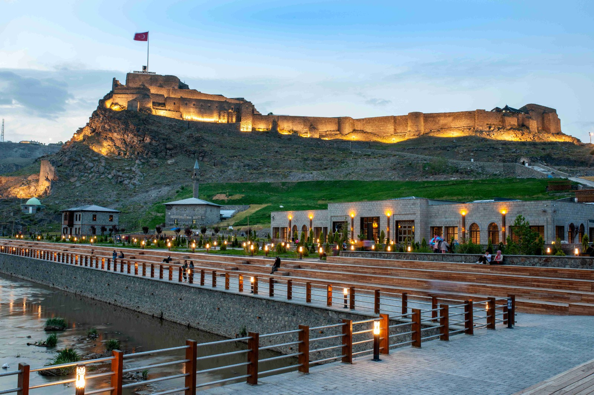
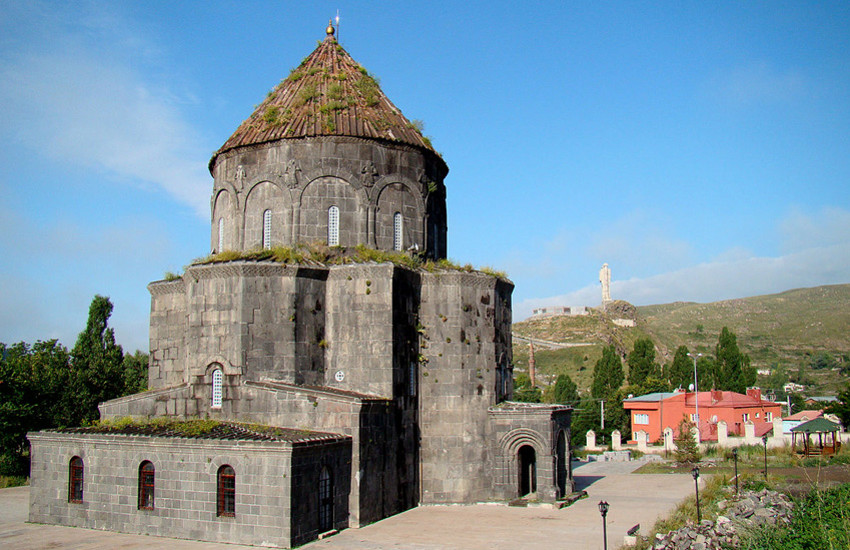
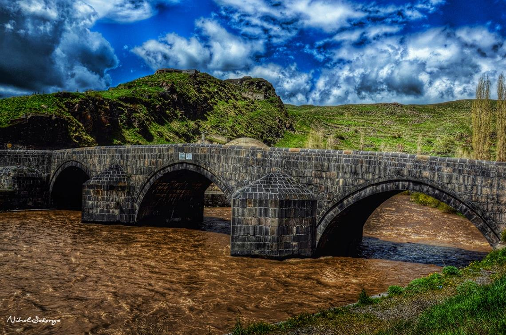

UNESCO Dünya Mirası Listesi'nde yer alan Ani, 1000 yıl önceye dayanan tarihiyle büyüleyici bir orta çağ şehridir.
Adres: Ocaklı Köyü, Merkez/Kars
Ziyaret Saatleri: Her gün 09:00 – 19:00
Giriş: Ücretli (Tam: 200 TL)
Müze Kart: Geçerli

1153 yılında Saltuklu Hükümdarı Melik İzzeddin tarafından yaptırılan kale, Kars manzarasını izlemek için eşsizdir.
Adres: Kaleiçi Mahallesi, Merkez/Kars
Ziyaret Saatleri: Her gün 08:00 – 20:00
Giriş: Ücretsiz
Müze Kart: Gerekli değil

10. yüzyılda inşa edilen bu Ermeni kilisesi, günümüzde Kümbet Camii olarak kullanılmaktadır.
Adres: Kaleiçi Mah., Merkez/Kars
Ziyaret Saatleri: Her gün 08:30 – 18:00
Giriş: Ücretsiz
Müze Kart: Gerekli değil

1579 yılında Lala Mustafa Paşa tarafından yaptırılan köprü, Kars Çayı üzerinde yer alır ve hala ayaktadır.
Adres: Kalealtı, Merkez/Kars
Ziyaret Saatleri: Her zaman ziyaret edilebilir
Giriş: Ücretsiz
Müze Kart: Gerekli değil